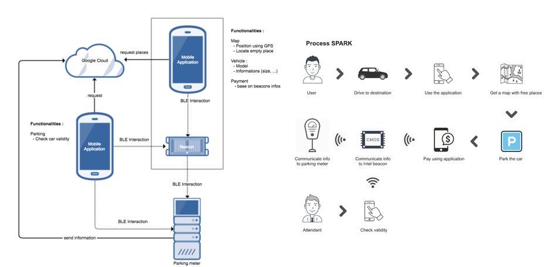
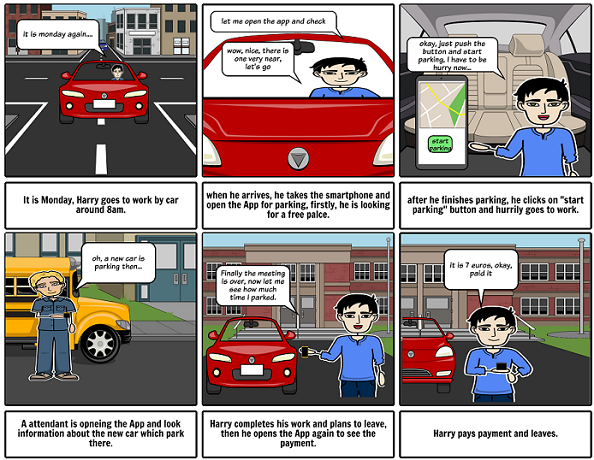
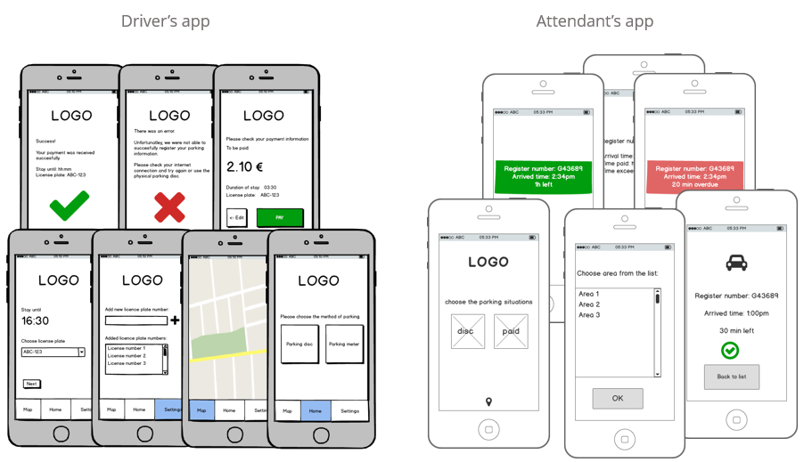
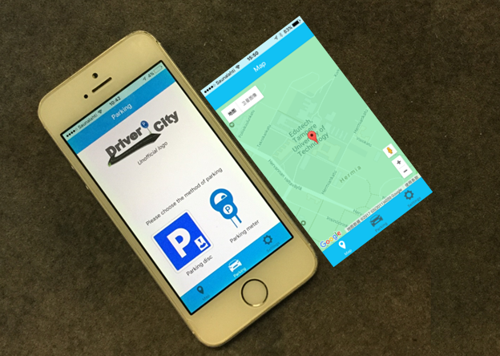
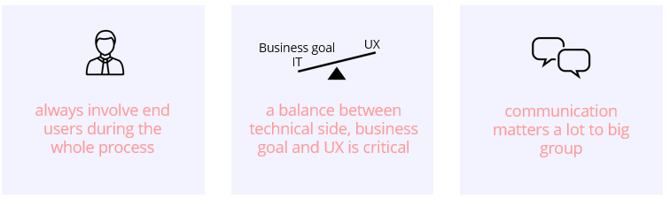

Spark
Role: UX Lead
When: 09.2016 to 02.2017
It is an open project for Tampere University of Technology, our team is formed by 7 students, and our goals including two mobile applications, one is for helping drivers find parking places while another is for attendants to checking of parking validity easier. And we have different roles in our team for distinct work, finally we delivered the project on time to satisfied customer.
Background
In this project, our customer is from university, and end users are driver and attendant. Based on the research and information from customer, since there are already two mobile applications for parking which doing a quite well job, our goal would focus more on the attendant application, to help parking attendant with work during winter time, when contains snow, foggy windshields, which tended to be a serious problem. Technologies we used in this project were IoT, Cloud and Ionic is used to build the mobile application.
Field research
We conducted researches to get more information from the parking system, including interviews, observing parking work (by walking through the parking area), talk with drivers, analyzed competitor products. However, since we did not have any opportunity to invite attendant to our research part, which is a big loss, therefore we send them emails and tried to get more information from their work.

Modelling & Storyboard
Then we discussed the research results with technical people in group, and we had the overview of the whole system. Here are the communication schema(left) and the general process during parking sytem(right).

After that, I created storyboard for driver users.

Wireframe
We created low fidelity mockups by Balsamiq, and soon conducted usability testing on it.

Usability testing
We tested the prototype of driver application with 6 users. Unfortunately we did not have chance to invite the attendants to evaluation, we did contacted them but no answer at this moment, since our customer suggested the main expected goal for them was on technical side, thus we just skipped the attendant evaluation and moved on.
Final application

Lessons from project
I have learned several lessons from this project since we did not involve end users through the design whole process, and I would like to share them below.
